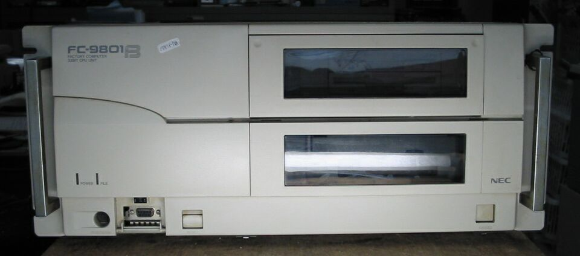
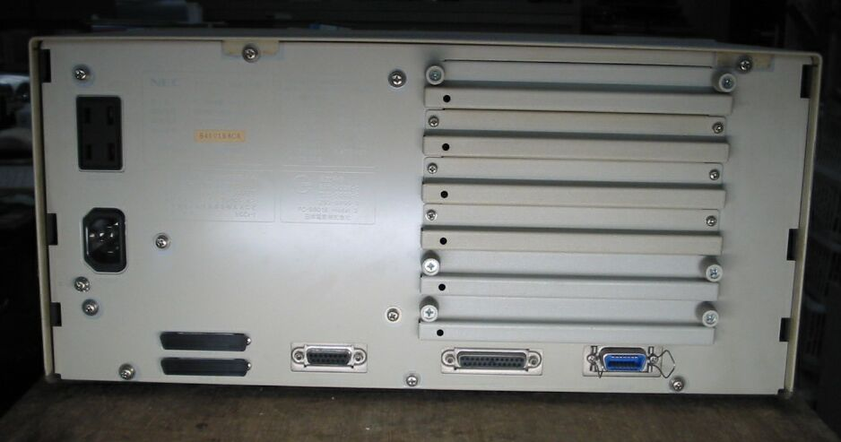

ファクトリーコンピュータFC-9801B
FC-9801Bの正面

FC-9801Bの裏面、拡張ボードがたくさん入ります。

FC-9801Bの主な仕様
マザーボードは、PC-9801BXと同じで、CPUリセットのあたりの配線が、少し
追加されています。
型 名 ：FC-9801Bmodel2
発表日 ：93/06
出荷日 ：93/06
CPUクロック ： i486SX20MHz
ROM ： N88-BASIC(86)及びモニタ96KB
標準RAM ： 1.6MB
最大ユーザーズメモリ ： 14.6MB
グラフィックVRAM容量 ： 256KB
グラフィックVRAM画素数： 640*400
グラフィックVRAM色数 ： 4096色中16色2画面
サウンドVRAM ：
テキストVRAM ： 12KB
拡張スロット数 ： 標準スロット５スロット、RAS兼用スロット１スロット、
： 本体前面にHDスロット
拡張スロット電源容量 + 5V ：1.0A
+12V ：0.1A
-12V ：0.1A
標準実装ドライブ FDD ：3.5'FDX2（ベゼル付の1138Tです。）
漢字 ：標準:第一、第二、拡張
サウンド機能 ：オプション
カレンダ時計 ：μPD4990使用年サポートあり
ＶＣＣＩ適合 ：基準レベル0
使用条件 電圧 ：AC100V/110V+10%.-15%
周波数：50/60±1
温度 ：5～40
湿度 ：20～80%(結露なし)
消費電力 標準 (W) ：30
最大 (W) ：120
エネルギー消費効率 (W) ：30
外形寸法 本 体 (mm) (W)：420 (D)：345 (H)：200
キーボード(mm) (W)：439 (D)：183 (H)：31
重量 本体 (Kg) ：10.6
(2005/03/17 記)
変わった98のページに戻る